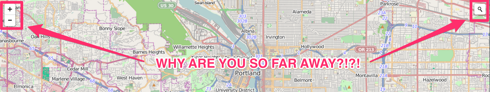

Experience Developer - Esri Portland R&D Center

Single-Topic maps get 3 times the traffic of the traditional Map Portal
Lession: Be consice your map should do one thing well.
People Actually Interact with Balloon Content
Lession: Don't neglect your popups.
People Rarely Change Default Map Settings
2% of visitors changed basemaps, 0.5% used fullscreen.
Lession: Less is more. Reduce your tools and layers.
People Look Up Info on Maps, and Leave
Auto completing search is key. Average visit was 1:43.
Lession: Get users in an out as fast as possible.
Only 12% of users browse information for more than three geographic features during a single visit.
Lession: Users care about a single feature.
User Experience (UX) and User Interface (UI) Summit
1pm-6pm Wednesday
Santa Rosa/San Jacinto
If its good enough to put on the page once its good enough to put on there again.
Are the biggest things the most important?
How far apart are important elements? How long will it take a user to find them?
But my boss wont give me time to design something!
- You - Right Now
In 2006 TeeHan+Lax invested $50,000 dollars in 10 companies they thought enbodied good design and UX.
One year later their investment matured 39.3%. Better then NASDAQ, The S&P 500, and the NYSE.
http://www.teehanlax.com/blog/ux-fund-matures-up-393/Twitter : @patrickarlt
Slides : http://bit.ly/1h4kDld